BAHAN AJAR GEOGRAFI
Klasifikasi Iklim Köppen: dari Rumus ke Kota Nyata
Menerapkan kriteria klasifikasi iklim Köppen pada studi kasus wilayah di Indonesia dan dunia melalui simulasi tanya-jawab bersama Iklim KoppenBot.
Keterangan |
Isi |
|---|---|
Mata pelajaran |
Geografi (SMA/MA) |
Topik |
Klasifikasi iklim Köppen–Geiger |
Studi kasus |
Indonesia: Pontianak, Jakarta, Surabaya, Kupang, Dieng Dunia: Kairo, Roma, London, Moskow, Utqiagvik |
Model pembelajaran |
Simulasi tanya-jawab dengan chatbot (KoppenBot) + latihan menghitung |
Saran alokasi waktu |
2 × 45 menit (dapat dipecah menjadi 2 pertemuan) |
Disusun untuk |
Guru dan peserta didik |
Catatan penting tentang data Data suhu dan curah hujan bulanan pada bahan ajar ini adalah nilai pendekatan (dibulatkan) yang dibuat untuk keperluan latihan agar mewakili pola iklim tiap kota. Angka tersebut bukan data resmi stasiun. Untuk tugas penelitian atau penilaian formal, ganti dengan normal iklim resmi dari BMKG (Indonesia) atau WMO/stasiun cuaca setempat (kota dunia). Kriteria klasifikasi dan sumber rujukan di daftar pustaka merupakan sumber ilmiah yang dapat dirujuk. |
A. Tujuan Pembelajaran dan Peta Isi
Setelah mempelajari bahan ajar ini, kamu diharapkan mampu:
menjelaskan dasar pemikiran klasifikasi iklim Köppen (suhu, curah hujan, dan vegetasi);
menyebutkan lima kelompok iklim utama (A, B, C, D, E) beserta ciri suhu dan curah hujannya;
menerapkan kriteria Köppen langkah demi langkah pada data 12 bulan suatu kota;
membaca klimatogram dan menyimpulkan tipe iklimnya;
membandingkan tipe iklim beberapa wilayah di Indonesia dan di dunia serta menjelaskan penyebabnya;
menggunakan KoppenBot sebagai "teman bertanya" tanpa menelan jawabannya mentah-mentah (selalu cek hitungannya).
Peta isi
| Bagian | Isi | Kegiatan |
|---|---|---|
| B | Mengenal klasifikasi Köppen | Membaca |
| C | Kriteria dan alur menentukan tipe iklim | Membaca, mencatat |
| D | Kenalan dengan Iklim KoppenBot | Simulasi |
| E | Studi kasus Indonesia (5 kota) | Simulasi + hitung |
| F | Studi kasus dunia (5 kota) | Simulasi + hitung |
| G | Mengapa Indonesia didominasi iklim A? | Diskusi |
| H | Aktivitas kelas: jadilah KoppenBot | Kerja kelompok |
| I | Latihan soal, kunci, dan penilaian | Mandiri |
| J | Daftar pustaka | Rujukan |
B. Mengenal Klasifikasi Iklim Köppen
1. Kenapa iklim perlu dikelompokkan?
Bumi punya ribuan lokasi dengan kondisi cuaca yang berbeda-beda. Kalau setiap tempat dijelaskan satu per satu, kita kewalahan. Karena itu para ilmuwan mengelompokkan tempat-tempat yang polanya mirip ke dalam satu tipe iklim. Dengan begitu, kita bisa cepat membayangkan: "Oh, kota ini iklimnya seperti Jakarta" atau "Wilayah ini kering seperti Kairo".
2. Siapa Köppen?
Klasifikasi Köppen disusun oleh Wladimir Köppen, ahli iklim berkebangsaan Jerman, dan kemudian disempurnakan oleh banyak ilmuwan lain, termasuk Rudolf Geiger. Karena itu sistem ini sering disebut klasifikasi Köppen–Geiger. Gagasannya sederhana: vegetasi alami adalah cerminan iklim, sehingga batas-batas iklim dipilih mengikuti sebaran tumbuhan, lalu diterjemahkan menjadi angka suhu dan curah hujan.
Klasifikasi Köppen–Geiger masih banyak digunakan dalam pembelajaran dan penelitian iklim (Peel dkk., 2007; Kottek dkk., 2006). Salah satu peta yang banyak dirujuk menyajikan klasifikasi pada resolusi sekitar 1 km dan menggambarkan lima kelompok utama beserta subtipenya (Beck dkk., 2018).
3. Lima kelompok iklim utama
| Kode | Nama | Ciri utama (versi Peel dkk., 2007) | Contoh di bahan ajar |
|---|---|---|---|
| A | Tropis | Suhu bulan terdingin ≥ 18 °C. Panas sepanjang tahun. | Pontianak, Jakarta, Surabaya, Kupang |
| B | Kering (arid dan semiarid) | Penguapan lebih besar daripada hujan. Curah hujan tahunan di bawah ambang kering. | Kairo |
| C | Sedang (temperate) | Bulan terdingin antara 0 dan 18 °C, bulan terpanas > 10 °C. | Roma, London, Dieng |
| D | Benua (continental) | Bulan terdingin ≤ 0 °C, bulan terpanas > 10 °C. Musim dingin sangat dingin. | Moskow |
| E | Kutub (polar) | Bulan terpanas ≤ 10 °C. | Utqiagvik |
Tips mengingat Urutan A → E kira-kira bergerak dari panas ke dingin: tropis → sedang → benua → kutub. Kelompok B (kering) adalah pengecualian, sebab penentunya adalah hujan, bukan suhu. Karena itu dalam alur keputusan, kelompok B diperiksa lebih dulu sebelum C, D, dan E. |
C. Kriteria dan Alur Menentukan Tipe Iklim
1. Data apa yang kita perlukan?
Siapkan 12 nilai suhu rata-rata bulanan dan 12 nilai curah hujan bulanan untuk satu kota. Gunakan satuan °C untuk suhu dan mm untuk curah hujan. Dari data tersebut, hitung besaran-besaran berikut:
| Simbol | Artinya | Cara mendapatkan |
|---|---|---|
| MAT | Suhu rata-rata tahunan (°C) | Rata-rata 12 suhu bulanan |
| MAP | Curah hujan tahunan (mm) | Jumlah 12 curah hujan bulanan |
| Thot / Tcold | Suhu bulan terpanas / terdingin | Nilai terbesar / terkecil dari 12 suhu |
| Tmon10 | Jumlah bulan dengan suhu ≥ 10 °C | Hitung bulan yang suhunya 10 °C atau lebih |
| Pdry | Curah hujan bulan terkering | Nilai terkecil dari 12 curah hujan |
| Psdry / Pswet | Hujan bulan terkering / terbasah pada musim panas* | Terkecil / terbesar pada bulan musim panas |
| Pwdry / Pwwet | Hujan bulan terkering / terbasah pada musim dingin* | Terkecil / terbesar pada bulan musim dingin |
| Pthreshold | Ambang kering (mm) | Lihat rumus di bawah |
Untuk latihan dalam bahan ajar ini, musim panas belahan bumi utara ditetapkan April–September dan musim dingin Oktober–Maret. Di belahan bumi selatan, pembagiannya dibalik: musim panas Oktober–Maret dan musim dingin April–September. Gunakan pembagian musim yang sama secara konsisten saat menghitung ambang kekeringan.
Rumus ambang kering (Pthreshold) Hitung dulu berapa persen hujan tahunan yang jatuh pada musim panas: • jika ≥ 70% hujan jatuh di musim panas: Pthreshold = 2 × MAT + 28 • jika ≥ 70% hujan jatuh di musim dingin: Pthreshold = 2 × MAT • selain itu (hujan merata): Pthreshold = 2 × MAT + 14 Sumber: Peel dkk. (2007), sebagaimana dimuat dalam tabel kriteria rujukan. |
2. Alur keputusan
Ikuti alur keputusan secara berurutan dari atas ke bawah. Setiap jawaban menentukan apakah kamu bisa menetapkan kelompok utama atau harus melanjutkan ke langkah berikutnya. Jangan memilih kode hanya berdasarkan letak lintang atau kesan umum tentang suatu kota.
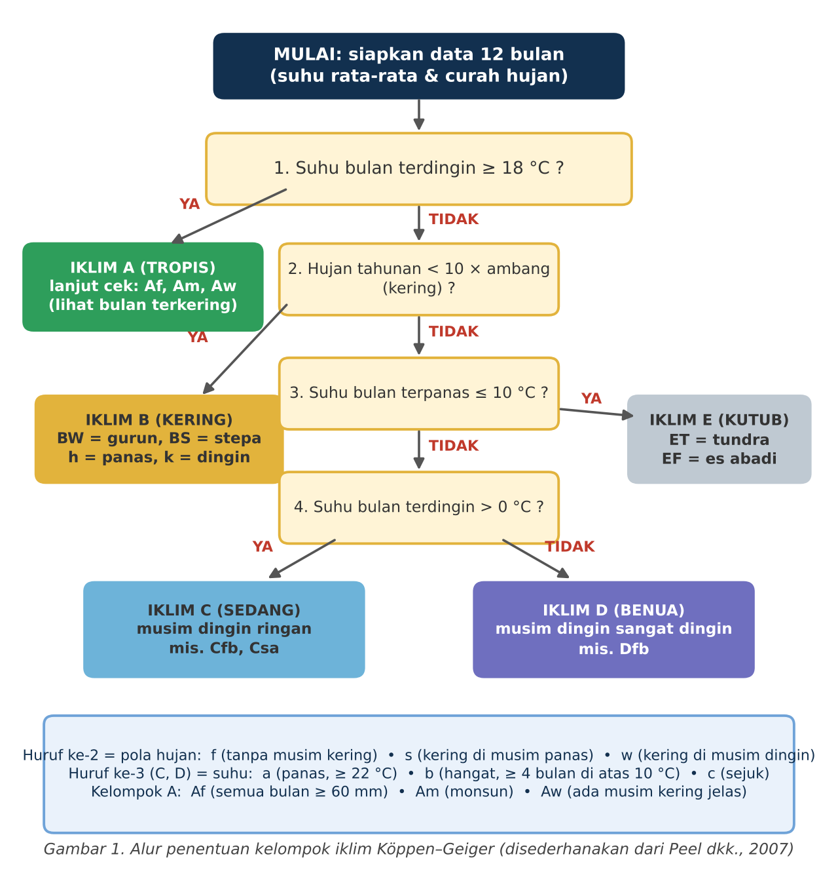
3. Menentukan huruf kedua dan ketiga
Kelompok |
Huruf ke-2 |
Huruf ke-3 |
|---|---|---|
A (tropis) |
f: bulan terkering ≥ 60 mm (Af) m: ada bulan kering, tetapi terkompensasi hujan lebat, Pdry ≥ 100 − MAP/25 (Am) w: musim kering jelas, Pdry < 100 − MAP/25 (Aw) |
tidak dipakai |
B (kering) |
W: gurun, MAP < 5 × Pthreshold S: stepa, MAP antara 5 dan 10 × Pthreshold |
h: panas, MAT ≥ 18 °C k: dingin, MAT < 18 °C |
C dan D |
s: kering di musim panas, Psdry < 40 mm dan Psdry < Pwwet/3 w: kering di musim dingin, Pwdry < Pswet/10 f: tidak ada musim kering |
a: musim panas panas, Thot ≥ 22 °C b: hangat, Thot < 22 °C dan Tmon10 ≥ 4 c: sejuk, hanya 1 sampai 3 bulan ≥ 10 °C (d pada D: Tcold < −38 °C) |
E (kutub) |
T: tundra, Thot antara 0 dan 10 °C F: es abadi, Thot ≤ 0 °C |
tidak dipakai |
Catatan: batas antara kelompok C dan D adalah 0 °C pada Peel dkk. (2007), yang dipakai di sini. Beberapa versi lain memakai −3 °C. Selisih ini hanya memengaruhi kota-kota yang bulan terdinginnya sangat dekat 0 °C.
4. Cara membaca klimatogram
Klimatogram menggabungkan curah hujan bulanan (biasanya ditampilkan sebagai batang) dan suhu rata-rata bulanan (biasanya sebagai garis). Pada contoh iklim tropis A, garis 60 mm membantu mengenali bulan dengan curah hujan kurang dari 60 mm. Garis ini bukan satu-satunya kriteria klasifikasi: untuk membedakan Af, Am, dan Aw, tetap periksa rumus ambang Am/Aw yang menggunakan curah hujan tahunan.
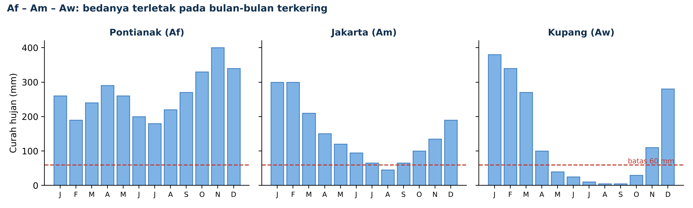
Gambar 2. Perbandingan Af, Am, dan Aw: bedanya terletak pada bulan-bulan terkering (data pendekatan).
D. Kenalan dengan Iklim KoppenBot
KoppenBot adalah tokoh chatbot rekaan yang bertugas menemani kamu belajar Köppen. Dialog di bawah ini disusun sebagai simulasi tanya-jawab: kamu membaca percakapan seorang siswa dengan KoppenBot, lalu ikut menghitung sendiri. Perhatikan bahwa KoppenBot tidak langsung memberi jawaban, tetapi memandu langkah demi langkah.
Aturan main simulasi
Baca dialog dan cocokkan angka pada tabel data dengan hitungan KoppenBot.
Tutup dulu jawaban KoppenBot dengan kertas, coba tebak, baru buka.
Kalau menemukan perbedaan hitungan, catat dan diskusikan. Chatbot bisa salah hitung, jadi kamu adalah pemeriksanya.
Dialog 1: Aturan dasar
Siswa KoppenBot, aku bingung. Katanya iklim Köppen itu pakai huruf-huruf kayak Af, Cfb. Itu maksudnya apa?
KoppenBot Pertanyaan bagus. Kode itu seperti "plat nomor" iklim. Huruf pertama menunjukkan kelompok besar (A sampai E). Huruf kedua menunjukkan pola hujan. Huruf ketiga menunjukkan suhu.
Contoh: Cfb artinya C = sedang, f = tidak ada musim kering, b = musim panas hangat.
Siswa Terus, dari mana tahu sebuah kota masuk huruf yang mana?
KoppenBot Dari data 12 bulan. Aku hanya butuh suhu dan curah hujan tiap bulan. Pertama kita lihat suhu bulan terdingin. Kalau ≥ 18 °C, kota itu pasti kelompok A (tropis). Kalau tidak, kita lanjut ke pertanyaan berikutnya di alur pada Gambar 1.
Mau coba dengan kota di Indonesia dulu?
Siswa Boleh. Ayo!
E. Studi Kasus Indonesia
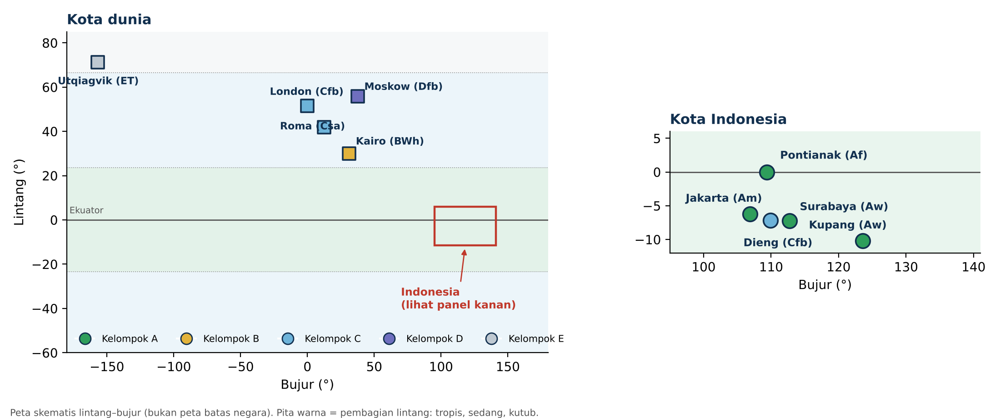
Gambar 3. Sebaran kota studi kasus (peta skematis lintang–bujur, bukan peta batas negara).
Kasus 1: Jakarta (Am)
| Jakarta | Jan | Feb | Mar | Apr | Mei | Jun | Jul | Agu | Sep | Okt | Nov | Des |
|---|---|---|---|---|---|---|---|---|---|---|---|---|
| Suhu (°C) | 26,6 | 26,7 | 27,0 | 27,4 | 27,5 | 27,2 | 27,0 | 27,2 | 27,5 | 27,7 | 27,5 | 27,0 |
| Hujan (mm) | 300 | 300 | 210 | 150 | 120 | 95 | 65 | 45 | 65 | 100 | 135 | 190 |
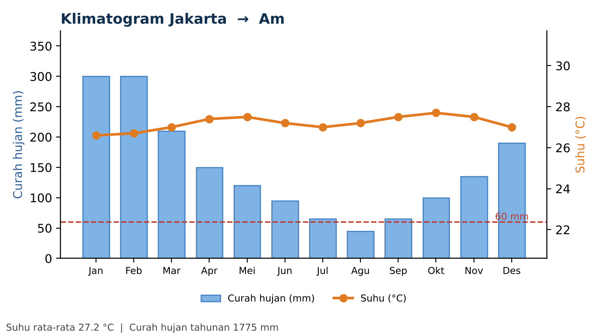
Gambar 4. Klimatogram Jakarta (data pendekatan).
Siswa KoppenBot, aku dapat data Jakarta. Suhunya antara 26,6 sampai 27,7 °C. Hujannya paling sedikit 45 mm di bulan Agustus. Tipe iklimnya apa?
KoppenBot Kita jalan pelan-pelan ya.
Langkah 1. Suhu bulan terdingin Jakarta = 26,6 °C. Apakah ≥ 18 °C? Ya, jadi kelompok A (tropis).
Langkah 2. Cek bulan terkering. Pdry = 45 mm. Apakah ≥ 60 mm? Tidak, jadi bukan Af.
Siswa Berarti Aw dong? Soalnya ada bulan kering.
KoppenBot Hampir! Jangan buru-buru. Ada satu tipe lagi di tengah-tengahnya, yaitu Am (monsun). Kita uji dengan rumus.
Langkah 3. Hitung MAP = 1.775 mm. Ambang = 100 − MAP/25 = 100 − 71 = 29 mm.
Pdry = 45 mm dan ambang Am/Aw = 29 mm. Karena 45 ≥ 29, data latihan ini memenuhi kriteria Am (tropis monsun), bukan Aw. Rumus tersebut menunjukkan bahwa curah hujan pada bulan-bulan lain cukup besar untuk memenuhi kriteria Am; jangan menganggap satu rumus ini sebagai jaminan bahwa setiap lokasi pasti memiliki vegetasi yang sama.
Siswa Jadi kalau Pdry-nya kurang dari 29 baru Aw?
KoppenBot Tepat. Untuk Jakarta batasnya 29 mm. Kalau bulan terkering hanya 20 mm, misalnya, kita masuk Aw. Batas ini berbeda-beda untuk tiap kota karena bergantung pada MAP.
Kasus 2: Pontianak (Af)
| Pontianak | Jan | Feb | Mar | Apr | Mei | Jun | Jul | Agu | Sep | Okt | Nov | Des |
|---|---|---|---|---|---|---|---|---|---|---|---|---|
| Suhu (°C) | 26,4 | 26,6 | 27,0 | 27,3 | 27,5 | 27,2 | 27,0 | 27,0 | 26,9 | 26,9 | 26,8 | 26,6 |
| Hujan (mm) | 260 | 190 | 240 | 290 | 260 | 200 | 180 | 220 | 270 | 330 | 400 | 340 |
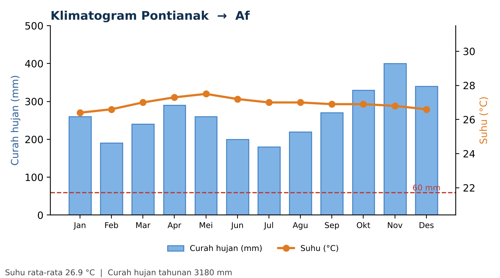
Gambar 5. Klimatogram Pontianak (data pendekatan).
Siswa Sekarang Pontianak. Kota ini dilewati garis khatulistiwa, kan?
KoppenBot Betul, Pontianak sangat dekat dengan ekuator. Ayo hitung.
Langkah 1. Suhu terdingin 26,4 °C ≥ 18 °C, jadi A.
Langkah 2. Bulan terkering = Juli, 180 mm. Apakah ≥ 60 mm? Ya, bahkan jauh di atasnya. Setiap bulan basah, jadi Af (hutan hujan tropis).
Di klimatogram, seluruh nilai curah hujan bulanan Pontianak berada di atas garis 60 mm. Karena bulan terkeringnya 180 mm, Pontianak memenuhi kriteria Af pada data latihan ini.
Kasus 3: Surabaya dan Kupang (Aw)
| Surabaya | Jan | Feb | Mar | Apr | Mei | Jun | Jul | Agu | Sep | Okt | Nov | Des |
|---|---|---|---|---|---|---|---|---|---|---|---|---|
| Suhu (°C) | 27,5 | 27,6 | 27,7 | 28,0 | 28,1 | 27,5 | 27,0 | 27,0 | 27,8 | 28,5 | 28,7 | 28,0 |
| Hujan (mm) | 310 | 290 | 230 | 140 | 100 | 70 | 25 | 10 | 15 | 45 | 130 | 250 |
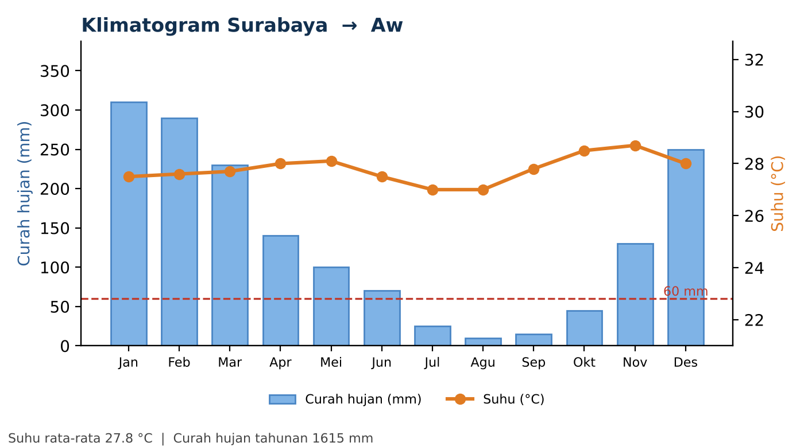
Gambar 6. Klimatogram Surabaya (data pendekatan).
Siswa Aku tinggal di Surabaya. Kalau Agustus rasanya kering banget. Kota ini tipe apa?
KoppenBot Mari kita buktikan dengan angka.
Langkah 1. Suhu terdingin 27,0 °C, jadi A.
Langkah 2. Bulan terkering = Agustus, 10 mm. Kurang dari 60 mm, jadi bukan Af.
Langkah 3. MAP = 1.615 mm, sehingga ambang = 100 − 1.615/25 = 100 − 64,6 = 35,4 mm. Pdry kita 10 mm, dan 10 < 35,4. Artinya musim keringnya nyata dan hujan lainnya tidak cukup "menolong". Kesimpulan: Aw (tropis basah-kering / savana).
Siswa Kalau Kupang? Katanya lebih kering lagi.
| Kupang | Jan | Feb | Mar | Apr | Mei | Jun | Jul | Agu | Sep | Okt | Nov | Des |
|---|---|---|---|---|---|---|---|---|---|---|---|---|
| Suhu (°C) | 27,8 | 27,6 | 27,6 | 27,8 | 27,5 | 26,8 | 26,2 | 26,5 | 27,5 | 28,7 | 29,0 | 28,4 |
| Hujan (mm) | 380 | 340 | 270 | 100 | 40 | 25 | 10 | 5 | 5 | 30 | 110 | 280 |
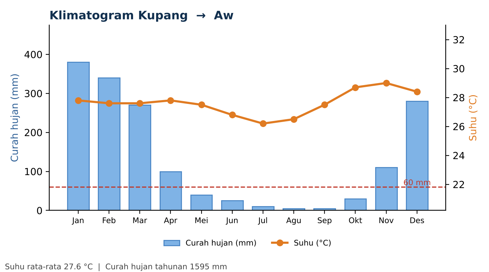
Gambar 7. Klimatogram Kupang (data pendekatan).
KoppenBot Betul. Di Kupang, bulan terkering (Agustus dan September) hanya sekitar 5 mm. MAP = 1.595 mm, ambang = 100 − 63,8 = 36,2 mm. Karena 5 < 36,2, hasilnya juga Aw.
Perbedaan penting dengan Surabaya: musim keringnya lebih panjang dan lebih tegas. Lihat berapa banyak batang yang berada di bawah garis merah: di Kupang ada 6 bulan (Mei–Oktober), di Surabaya sekitar 4 bulan (Juli–Oktober). Satu tipe iklim yang sama tetap bisa punya "karakter" berbeda.
Kasus 4: Dataran tinggi Dieng (Cfb): tropis tapi bukan A?
| Dieng | Jan | Feb | Mar | Apr | Mei | Jun | Jul | Agu | Sep | Okt | Nov | Des |
|---|---|---|---|---|---|---|---|---|---|---|---|---|
| Suhu (°C) | 13,0 | 13,2 | 13,5 | 13,8 | 13,5 | 12,8 | 12,2 | 12,5 | 13,3 | 14,2 | 14,0 | 13,5 |
| Hujan (mm) | 400 | 380 | 350 | 250 | 150 | 80 | 60 | 50 | 100 | 220 | 320 | 400 |
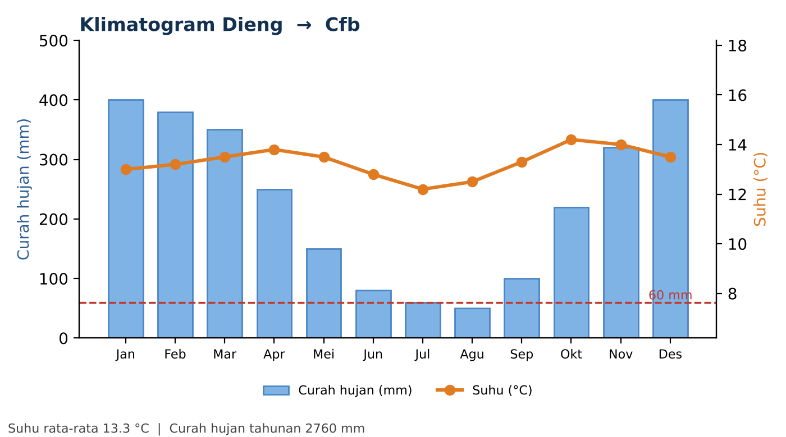
Gambar 8. Klimatogram dataran tinggi Dieng (data pendekatan untuk latihan).
Siswa Dieng itu kan di Jawa Tengah, masih Indonesia, masih dekat khatulistiwa. Pasti A, kan?
KoppenBot Jebakan klasik! Mari kita uji, bukan menebak.
Langkah 1. Suhu bulan terdingin Dieng = 12,2 °C. Apakah ≥ 18 °C? Tidak. Jadi bukan A. Letak lintang saja tidak cukup; ketinggian menurunkan suhu.
Langkah 2. Apakah kering? MAT = 13,3 °C. Hujan jatuh sekitar 75% di Oktober–Maret (musim panas belahan selatan), jadi Pthreshold = 2 × 13,3 + 28 = 54,6. Sepuluh kali itu = 546 mm, sedangkan MAP = 2.760 mm. Jauh di atas, jadi bukan B.
Langkah 3. Thot = 14,2 °C > 10 °C, jadi bukan E. Tcold = 12,2 °C > 0 °C, jadi kelompok C.
Siswa Terus huruf kedua dan ketiganya?
KoppenBot Huruf ke-2. Bulan terkering di musim dingin (Apr–Sep) = 50 mm. Syarat w: Pwdry < Pswet/10 = 400/10 = 40. Karena 50 > 40, tidak kering ⇒ f.
Huruf ke-3. Thot = 14,2 °C < 22 °C, dan semua 12 bulan ≥ 10 °C (Tmon10 = 12 ≥ 4) ⇒ b.
Kesimpulan: Cfb. Peta Köppen–Geiger beresolusi tinggi memang dibuat agar lebih teliti di wilayah dengan perbedaan ketinggian yang tajam (Beck dkk., 2018).
Catatan guru Nilai hujan bulan Juli–Agustus Dieng dibuat dekat batas "w" agar siswa melihat bagaimana kriteria bekerja. Mintalah siswa menguji: jika Agustus diubah menjadi 35 mm, hasilnya berubah dari Cfb menjadi Cwb. |
Ringkasan Indonesia
| Kota | Tcold (°C) | MAP (mm) | Pdry (mm) | Ambang Am/Aw | Tipe |
|---|---|---|---|---|---|
| Pontianak | 26,4 | 3.180 | 180 | tidak perlu (≥ 60) | Af |
| Jakarta | 26,6 | 1.775 | 45 | 29,0 | Am |
| Surabaya | 27,0 | 1.615 | 10 | 35,4 | Aw |
| Kupang | 26,2 | 1.595 | 5 | 36,2 | Aw |
| Dieng | 12,2 | 2.760 | 50 | tidak berlaku (bukan A) | Cfb |
F. Studi Kasus Dunia
Sekarang kita keluar dari tropis. Perhatikan bagaimana kriteria yang sama dipakai di lima kota yang iklimnya sangat berbeda.
Kasus 5: Kairo, Mesir (BWh)
| Kairo | Jan | Feb | Mar | Apr | Mei | Jun | Jul | Agu | Sep | Okt | Nov | Des |
|---|---|---|---|---|---|---|---|---|---|---|---|---|
| Suhu (°C) | 14,0 | 15,5 | 18,0 | 22,0 | 26,0 | 28,5 | 29,5 | 29,5 | 27,5 | 24,5 | 20,0 | 15,5 |
| Hujan (mm) | 5 | 4 | 4 | 1 | 1 | 0 | 0 | 0 | 0 | 1 | 3 | 6 |
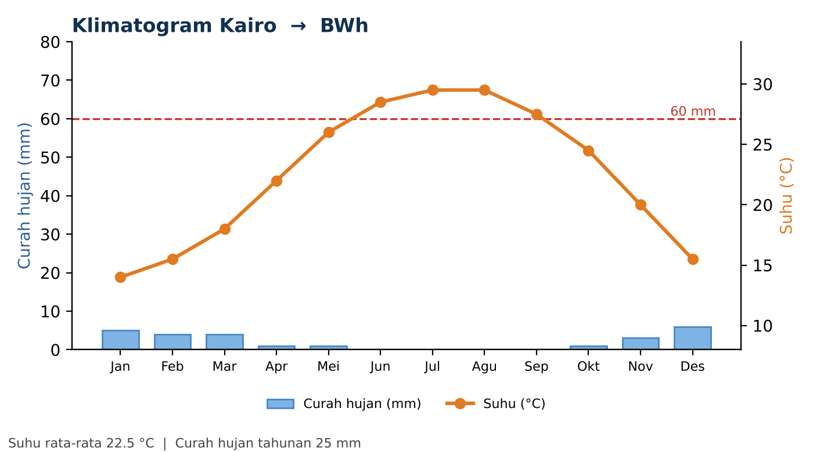
Gambar 9. Klimatogram Kairo (data pendekatan).
Siswa Kairo itu gurun, kan? Tapi gimana buktinya pakai angka?
KoppenBot Langkah 1. Suhu terdingin 14 °C < 18 °C, jadi bukan A.
Langkah 2. Cek kering. MAT = 22,5 °C. Hujan di Kairo hampir semuanya jatuh pada musim dingin (Oktober–Maret), jadi aturan "musim dingin" berlaku: Pthreshold = 2 × MAT = 45.
Gurun jika MAP < 5 × Pthreshold = 225 mm. Kairo hanya sekitar 25 mm per tahun, jauh di bawahnya ⇒ BW.
Huruf ke-3. MAT 22,5 °C ≥ 18 °C ⇒ h (panas). Kesimpulan: BWh (gurun panas).
Kasus 6: Roma, Italia (Csa): iklim Mediterania
| Roma | Jan | Feb | Mar | Apr | Mei | Jun | Jul | Agu | Sep | Okt | Nov | Des |
|---|---|---|---|---|---|---|---|---|---|---|---|---|
| Suhu (°C) | 8,0 | 9,0 | 11,5 | 14,5 | 19,0 | 23,0 | 26,0 | 26,0 | 22,0 | 18,0 | 13,0 | 9,0 |
| Hujan (mm) | 70 | 65 | 60 | 70 | 50 | 30 | 20 | 25 | 70 | 110 | 110 | 85 |
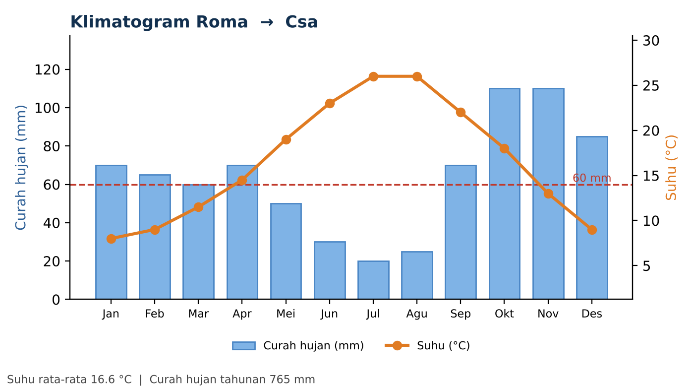
Gambar 10. Klimatogram Roma (data pendekatan).
Siswa Roma ini kebalikannya Indonesia, ya? Musim panasnya yang kering?
KoppenBot Betul sekali. Ayo cek.
Langkah 1. Tcold = 8 °C: bukan A. Langkah 2. MAP = 765 mm. Hujan musim panas (Apr–Sep) = 265 mm atau sekitar 35%, jadi Pthreshold = 2 × 16,6 + 14 = 47,2. Sepuluh kali itu = 472 mm < 765 mm, jadi bukan B.
Langkah 3. Thot = 26 °C > 10 °C: bukan E. Tcold = 8 °C > 0 °C: kelompok C.
Huruf ke-2. Bulan terkering musim panas (Jul) = 20 mm. Syarat s: Psdry < 40 dan Psdry < Pwwet/3. Pwwet = 110 mm, jadi 110/3 = 36,7. Karena 20 < 40 dan 20 < 36,7 ⇒ s.
Huruf ke-3. Thot = 26 °C ≥ 22 °C ⇒ a. Kesimpulan: Csa (Mediterania, musim panas panas dan kering).
Kasus 7: London, Inggris (Cfb)
| London | Jan | Feb | Mar | Apr | Mei | Jun | Jul | Agu | Sep | Okt | Nov | Des |
|---|---|---|---|---|---|---|---|---|---|---|---|---|
| Suhu (°C) | 5,0 | 5,5 | 7,5 | 9,8 | 13,5 | 16,5 | 19,0 | 18,5 | 15,5 | 12,0 | 8,0 | 5,5 |
| Hujan (mm) | 55 | 40 | 40 | 45 | 50 | 50 | 45 | 50 | 50 | 70 | 65 | 55 |
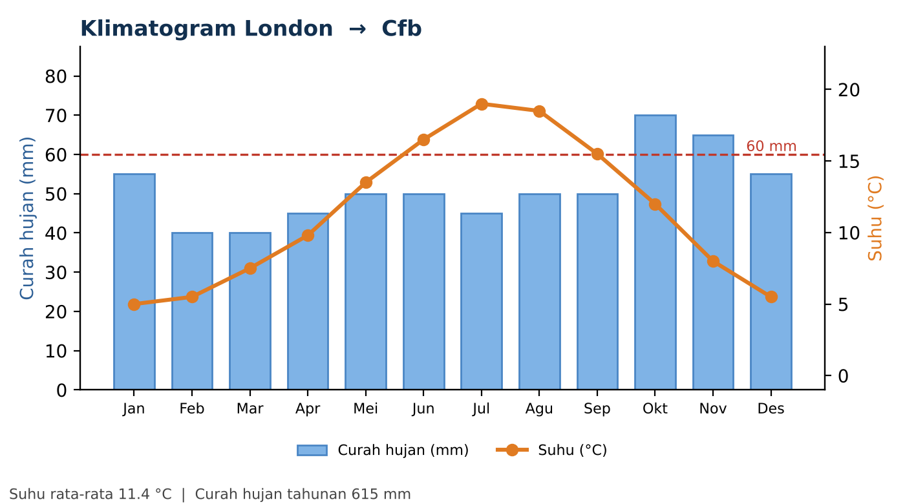
Gambar 11. Klimatogram London (data pendekatan).
Siswa London terkenal hujan terus. Apakah itu berarti beda dari Roma di hurufnya?
KoppenBot Persis. Langkah 1–3 serupa dengan Roma: Tcold = 5 °C, bukan A. MAP = 615 mm, hujan musim panas ≈ 47%, jadi Pthreshold = 2 × 11,4 + 14 = 36,7, dan 10 × 36,7 = 367 < 615, jadi bukan B. Thot = 19 °C > 10 °C dan Tcold > 0 °C ⇒ C.
Huruf ke-2. Bulan terkering musim panas = 45 mm. Syarat s butuh Psdry < 40, jadi tidak terpenuhi. Musim dingin juga tidak kering. Hujan merata ⇒ f.
Huruf ke-3. Thot = 19 °C < 22 °C, dan ada 6 bulan ≥ 10 °C (Tmon10 = 6 ≥ 4) ⇒ b. Kesimpulan: Cfb.
Dieng dan London sama-sama Cfb. Sebabnya berbeda (ketinggian vs lintang tinggi), tetapi kriterianya sama. Itulah kekuatan klasifikasi berbasis angka.
Kasus 8: Moskow, Rusia (Dfb)
| Moskow | Jan | Feb | Mar | Apr | Mei | Jun | Jul | Agu | Sep | Okt | Nov | Des |
|---|---|---|---|---|---|---|---|---|---|---|---|---|
| Suhu (°C) | -6,5 | -6,0 | -1,0 | 6,5 | 13,0 | 17,0 | 19,0 | 17,0 | 11,5 | 5,5 | -0,5 | -5,0 |
| Hujan (mm) | 45 | 35 | 35 | 40 | 55 | 80 | 90 | 80 | 70 | 65 | 50 | 50 |
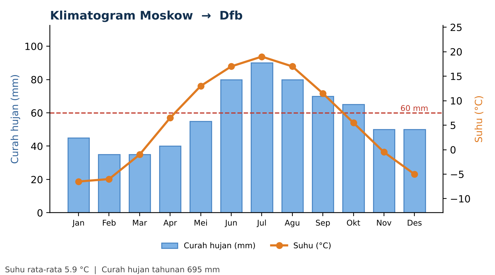
Gambar 12. Klimatogram Moskow (data pendekatan).
KoppenBot Langkah 1. Tcold = −6,5 °C: bukan A. MAP = 695 mm, hujan musim panas ≈ 60%, jadi Pthreshold = 2 × 5,9 + 14 = 25,8; 10 × 25,8 = 258 < 695, jadi bukan B.
Langkah 3. Thot = 19 °C > 10 °C: bukan E. Langkah 4. Tcold = −6,5 °C ≤ 0 °C ⇒ kelompok D (benua).
Huruf ke-2. Psdry = 40 mm (tidak kurang dari 40) dan musim dingin tidak sangat kering ⇒ f. Huruf ke-3. Thot = 19 °C < 22 °C, Tmon10 = 5 ≥ 4 ⇒ b. Kesimpulan: Dfb.
Siswa Jadi bedanya Moskow dan London itu cuma di bulan terdingin di bawah nol?
KoppenBot Itu pembeda utama pada huruf pertama: London tidak pernah turun di bawah 0 °C pada rata-rata bulanan sehingga C, Moskow turun ke −6,5 °C sehingga D.
Kasus 9: Utqiagvik, Alaska (ET)
| Utqiagvik | Jan | Feb | Mar | Apr | Mei | Jun | Jul | Agu | Sep | Okt | Nov | Des |
|---|---|---|---|---|---|---|---|---|---|---|---|---|
| Suhu (°C) | -26,0 | -27,0 | -26,0 | -18,0 | -7,0 | 2,0 | 4,5 | 3,5 | -1,0 | -9,0 | -19,0 | -24,0 |
| Hujan (mm) | 8 | 7 | 6 | 6 | 7 | 12 | 25 | 28 | 22 | 17 | 10 | 8 |
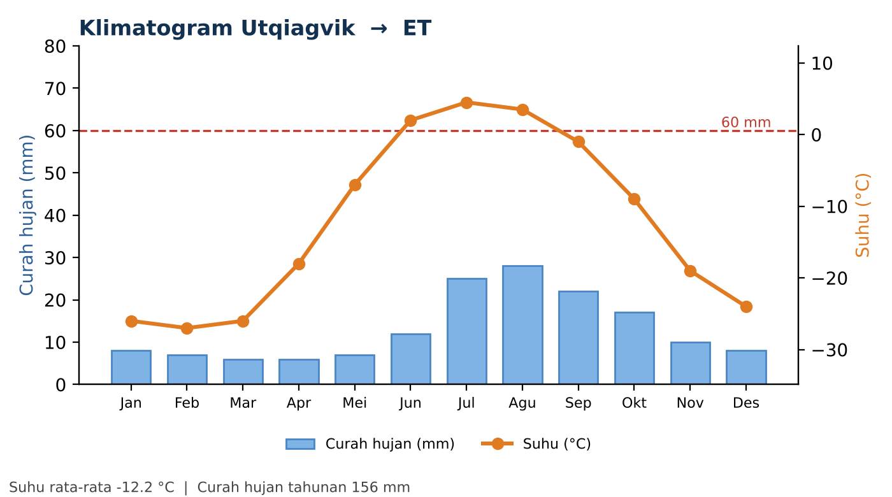
Gambar 13. Klimatogram Utqiagvik (data pendekatan).
KoppenBot Di sini pertanyaan pertama sudah cukup menentukan: Thot = 4,5 °C ≤ 10 °C ⇒ kelompok E (kutub). Karena Thot > 0 °C, jenisnya ET (tundra). Jika Thot ≤ 0 °C sepanjang tahun, namanya EF (es abadi).
Perhatikan juga bahwa MAP-nya hanya sekitar 156 mm, tetapi bukan gurun menurut Köppen. Pada suhu serendah itu, penguapan sangat kecil sehingga ambang kering menjadi sangat rendah.
Ringkasan dunia
| Kota | Tcold | Thot | MAP | Alur penentu | Tipe |
|---|---|---|---|---|---|
| Kairo | 14,0 | 29,5 | 25 | MAP < 5 × Pth; MAT ≥ 18 | BWh |
| Roma | 8,0 | 26,0 | 765 | C; Psdry 20 mm; Thot ≥ 22 | Csa |
| London | 5,0 | 19,0 | 615 | C; tidak kering; Tmon10 = 6 | Cfb |
| Moskow | -6,5 | 19,0 | 695 | D; tidak kering; Tmon10 = 5 | Dfb |
| Utqiagvik | -27,0 | 4,5 | 156 | Thot ≤ 10 °C | ET |
Satuan: suhu dalam °C, MAP dalam mm. Pth = Pthreshold.
G. Mengapa Indonesia Didominasi Iklim A?
Dari lima studi kasus Indonesia dalam bahan ajar ini, empat kota masuk kelompok A (tropis), sedangkan Dieng menjadi contoh wilayah dataran tinggi yang tidak memenuhi syarat suhu kelompok A pada data latihan. Pola contoh ini membantu kita melihat peran suhu dan curah hujan, tetapi tidak dimaksudkan sebagai gambaran lengkap seluruh iklim Indonesia.
Siswa KoppenBot, kenapa kota-kota Indonesia kebanyakan masuk A?
KoppenBot Tiga alasan utama:
1. Letak di sekitar ekuator. Sinar matahari datang hampir tegak lurus sepanjang tahun, sehingga suhu tinggi dan nyaris tidak berubah antarbulan. Syarat A (bulan terdingin ≥ 18 °C) mudah terpenuhi di dataran rendah.
2. Letak maritim. Indonesia adalah negara kepulauan di antara dua benua dan dua samudra. Laut menyuplai uap air, sehingga hujan banyak. Karena itulah variasi iklim di Indonesia ditentukan terutama oleh hujan, bukan suhu.
3. Angin muson. Perubahan arah angin musiman membuat sebagian wilayah punya musim hujan dan musim kemarau yang jelas. Wilayah yang lebih dekat ke Australia, seperti Nusa Tenggara, cenderung punya musim kemarau lebih panjang sehingga masuk Aw.
Siswa Kalau Dieng bisa C, berarti ada juga tempat di Indonesia yang D atau E?
KoppenBot Pertanyaan tajam! Syarat D adalah bulan terdingin ≤ 0 °C. Rata-rata bulanan sekecil itu tidak terjadi di Indonesia. Namun, pada puncak tertinggi tertentu, suhu bisa turun sangat rendah. Skala peta dunia biasanya terlalu kasar untuk memperlihatkannya, sedangkan peta beresolusi 1 km seperti Beck dkk. (2018) bisa menangkap lebih banyak detail pegunungan.
Untuk proyek kelas, kamu bisa mengunduh peta tersebut dan mencari wilayah tempat tinggalmu (alamat di daftar pustaka).
Pertanyaan diskusi
Mengapa tipe iklim dua kota yang sama-sama berada dekat ekuator (misalnya Pontianak dan Kupang) bisa berbeda?
Bagaimana tipe iklim (Af, Am, Aw) berkaitan dengan jenis vegetasi dan pertanian di daerah tersebut?
Jika suhu rata-rata dunia naik, kota mana dalam bahan ajar ini yang paling mungkin berpindah tipe iklim? Beri alasan berdasarkan kriteria.
Peta global Köppen–Geiger juga tersedia untuk kondisi masa depan (2071–2100), sehingga kamu dapat membandingkan dampak perubahan iklim terhadap sebaran tipe iklim (Beck dkk., 2018).
H. Aktivitas Kelas: Jadilah KoppenBot
Pada aktivitas ini, kamu berganti peran: kamu yang menjadi KoppenBot, dan temanmu menjadi penanya.
Langkah kegiatan (±45 menit)
Bentuk kelompok 3 orang: Penanya, KoppenBot, dan Pemeriksa.
Penanya memilih satu kota (dari Bagian E atau F, atau "Kota Misteri" di Bagian I) dan membacakan data 12 bulannya.
KoppenBot menjawab dengan pola tanya-jawab bertahap seperti pada dialog, lengkap dengan hitungan.
Pemeriksa mengecek setiap langkah memakai alur (Gambar 1) dan memberi tanda centang atau silang.
Tukar peran sampai setiap anggota pernah menjadi KoppenBot.
Presentasikan satu kasus paling menarik di depan kelas.
Lembar kerja (salin dan isi)
| Langkah | Pertanyaan | Hasil hitungan | Keputusan |
|---|---|---|---|
| 1 | Tcold ≥ 18 °C ? | ||
| 2 | MAP < 10 × Pthreshold ? (hitung Pthreshold dulu) | ||
| 3 | Thot ≤ 10 °C ? | ||
| 4 | Tcold > 0 °C ? (C atau D) | ||
| 5 | Huruf ke-2 (f / s / w, atau f / m / w untuk A) | ||
| 6 | Huruf ke-3 (a / b / c, atau h / k untuk B) | ||
| Tipe iklim akhir |
I. Latihan Soal, Kunci, dan Penilaian
1. Pilihan ganda
1. Syarat utama sebuah wilayah masuk kelompok iklim A (tropis) menurut Köppen adalah ...
A. Curah hujan tahunan lebih dari 2.000 mm
B. Suhu bulan terdingin ≥ 18 °C
C. Suhu bulan terpanas > 22 °C
D. Tidak ada bulan dengan hujan di bawah 100 mm
2. Suatu kota tropis memiliki bulan terkering dengan curah hujan 120 mm. Tipe iklimnya adalah ...
A. Af
B. Am
C. Aw
D. BSh
3. Kota Beta memiliki Tcold = 27,0 °C, MAP = 1.570 mm, dan Pdry = 45 mm. Tipe iklimnya adalah ...
A. Af
B. Am
C. Aw
D. Cfb
4. Pada kode Csa, huruf "s" berarti ...
A. Musim dingin kering
B. Musim panas kering
C. Tidak ada musim kering
D. Suhu sangat dingin
5. Kota dengan Thot = 4,5 °C dan Tcold = −27 °C termasuk ...
A. Dfc
B. BWk
C. ET
D. Cfb
6. Dieng berada di Indonesia tetapi tergolong Cfb, bukan A, karena ...
A. Letaknya jauh dari ekuator
B. Curah hujannya sedikit
C. Suhu bulan terdinginnya di bawah 18 °C akibat ketinggian
D. Tidak mendapat angin muson
7. Jika ≥ 70% curah hujan tahunan jatuh pada musim panas, maka Pthreshold dihitung dengan ...
A. 2 × MAT
B. 2 × MAT + 14
C. 2 × MAT + 28
D. MAT + 28
8. Perbedaan utama Af dan Aw terletak pada ...
A. Suhu bulan terdingin
B. Ada tidaknya bulan kering yang tegas
C. Letak lintang
D. Jumlah bulan dengan suhu > 10 °C
2. Kota Misteri (hitung sendiri)
Tentukan tipe iklim lima kota rekaan berikut. Gunakan alur pada Gambar 1. Kota Alfa, Beta, dan Gamma berada di belahan bumi selatan, sedangkan Delta dan Epsilon di belahan bumi utara.
Kota |
Jan |
Feb |
Mar |
Apr |
Mei |
Jun |
Jul |
Agu |
Sep |
Okt |
Nov |
Des |
|---|---|---|---|---|---|---|---|---|---|---|---|---|
Alfa Suhu |
26,0 |
26,3 |
26,8 |
27,0 |
27,0 |
26,5 |
26,0 |
26,0 |
26,5 |
27,0 |
26,8 |
26,3 |
Hujan (mm) |
220 |
200 |
250 |
270 |
230 |
180 |
160 |
170 |
200 |
260 |
280 |
250 |
Beta Suhu |
27,0 |
27,0 |
27,3 |
27,8 |
28,0 |
27,5 |
27,0 |
27,0 |
27,5 |
28,0 |
28,0 |
27,5 |
Hujan (mm) |
250 |
230 |
200 |
120 |
60 |
50 |
45 |
55 |
70 |
110 |
150 |
230 |
Gamma Suhu |
27,0 |
27,0 |
27,3 |
27,8 |
28,0 |
27,5 |
27,0 |
27,0 |
27,5 |
28,0 |
28,0 |
27,5 |
Hujan (mm) |
260 |
230 |
190 |
70 |
20 |
5 |
3 |
2 |
8 |
40 |
120 |
240 |
Delta Suhu |
11,0 |
12,0 |
14,0 |
17,0 |
21,0 |
25,0 |
28,0 |
28,0 |
24,0 |
20,0 |
15,0 |
12,0 |
Hujan (mm) |
80 |
70 |
60 |
50 |
30 |
10 |
5 |
8 |
40 |
70 |
90 |
100 |
Epsilon Suhu |
-22,0 |
-20,0 |
-12,0 |
-2,0 |
5,0 |
10,0 |
13,0 |
10,0 |
4,0 |
-3,0 |
-13,0 |
-19,0 |
Hujan (mm) |
30 |
25 |
25 |
30 |
45 |
70 |
80 |
75 |
60 |
45 |
40 |
35 |
3. Uraian
Jelaskan perbedaan Af, Am, dan Aw. Gunakan contoh Pontianak, Jakarta, dan Surabaya.
Tunjukkan langkah-langkah (dengan angka) bahwa Kota Delta termasuk Csa, bukan Cfb.
Mengapa Dieng dan London sama-sama Cfb padahal letak lintang dan penyebab suhu rendahnya berbeda? Apa yang diperlihatkan hal ini tentang cara kerja klasifikasi Köppen?
Tantangan: pilih kota tempat tinggalmu. Cari data bulanan dari BMKG, hitung tipe iklimnya, lalu bandingkan dengan peta Köppen–Geiger resolusi 1 km (Beck dkk., 2018).
Kunci Jawaban dan Pembahasan
Pilihan ganda
| No | Kunci | Pembahasan singkat |
|---|---|---|
| 1 | B | Kelompok A hanya ditentukan oleh suhu: bulan terdingin ≥ 18 °C (Peel dkk., 2007). Hujan baru dipakai untuk memilah Af, Am, dan Aw. |
| 2 | A | Pdry = 120 mm ≥ 60 mm, jadi setiap bulan basah ⇒ Af. |
| 3 | B | Pdry (45) < 60 ⇒ bukan Af. Ambang = 100 − 1.570/25 = 37,2. Karena 45 ≥ 37,2 ⇒ Am. |
| 4 | B | s = dry summer (musim panas kering), ciri iklim Mediterania. |
| 5 | C | Thot ≤ 10 °C ⇒ kelompok E; Thot > 0 °C ⇒ ET (tundra). |
| 6 | C | Ketinggian menurunkan suhu. Tcold ≈ 12 °C < 18 °C, jadi syarat A tidak terpenuhi. |
| 7 | C | Hujan dominan musim panas ⇒ Pthreshold = 2 × MAT + 28. |
| 8 | B | Keduanya A (suhu sama-sama tinggi). Af tanpa bulan kering, Aw punya musim kering jelas. |
Kota Misteri
| Kota | Tipe | Penentu utama |
|---|---|---|
| Alfa | Af | Tcold 26,0 °C ≥ 18 ⇒ A. Pdry = 160 mm ≥ 60 ⇒ Af. |
| Beta | Am | Tcold 27,0 °C ⇒ A. Pdry = 45 mm < 60. MAP = 1.570 mm ⇒ ambang 100 − 62,8 = 37,2. 45 ≥ 37,2 ⇒ Am. |
| Gamma | Aw | Tcold 27,0 °C ⇒ A. Pdry = 2 mm. MAP = 1.188 mm ⇒ ambang 100 − 47,5 = 52,5. 2 < 52,5 ⇒ Aw. |
| Delta | Csa | Tcold 11 °C ⇒ bukan A, bukan D. Hujan musim panas ≈ 23% (musim dingin dominan) ⇒ Pth = 2 × 18,9 = 37,8; 10 × Pth = 378 < MAP 613 ⇒ bukan B. Psdry = 5 mm < 40 dan < Pwwet/3 (100/3 = 33,3) ⇒ s. Thot 28 ≥ 22 ⇒ a. |
| Epsilon | Dfc | Thot 13 °C > 10 ⇒ bukan E. Tcold −22 °C ≤ 0 ⇒ D. Pth = 2 × (−4,1) + 14 = 5,8 ⇒ 58 < MAP 560 ⇒ bukan B. Psdry = 30 mm tetapi Pwwet/3 = 15 ⇒ bukan s; Pwdry = 25 > Pswet/10 = 8 ⇒ bukan w ⇒ f. Tmon10 = 3 (hanya Jun–Agu ≥ 10 °C) ⇒ c. |
Uraian (pokok jawaban)
No. 1: Af = semua bulan ≥ 60 mm (Pontianak: bulan terkering 180 mm). Am = ada bulan < 60 mm, tetapi Pdry ≥ 100 − MAP/25 (Jakarta: 45 ≥ 29). Aw = musim kering tegas, Pdry < 100 − MAP/25 (Surabaya: 10 < 35,4).
No. 2: Tunjukkan Psdry = 5 mm < 40 dan < Pwwet/3 = 33,3 sehingga huruf ke-2 = s (bukan f seperti pada Cfb), dan Thot = 28 °C ≥ 22 °C sehingga huruf ke-3 = a (bukan b).
No. 3: Dieng dingin karena ketinggian, London karena lintang tinggi. Keduanya memenuhi kriteria angka yang sama (Tcold antara 0 dan 18 °C, tidak ada musim kering, Thot < 22 °C, Tmon10 ≥ 4). Klasifikasi Köppen mengelompokkan berdasarkan hasil (suhu dan hujan), bukan penyebab geografisnya.
No. 4: Nilai dibenarkan jika siswa mencantumkan sumber data, menghitung dengan urutan yang benar, dan menjelaskan kecocokan atau perbedaan dengan peta.
Rubrik penilaian aktivitas "Jadilah KoppenBot"
| Aspek | Skor 4 | Skor 3 | Skor 2 | Skor 1 |
|---|---|---|---|---|
| Ketepatan perhitungan | Semua langkah dan angka benar | 1 kesalahan kecil | 2–3 kesalahan | Banyak kesalahan |
| Urutan alur | Urut dan lengkap | 1 langkah terlewat | 2 langkah terlewat | Tidak berurutan |
| Penjelasan (bahasa) | Jelas, mudah dipahami teman | Cukup jelas | Kurang jelas | Membingungkan |
| Pemeriksaan (peran Pemeriksa) | Menemukan dan memperbaiki semua kesalahan | Menemukan sebagian | Menemukan sedikit | Tidak memeriksa |
| Kerja sama | Semua aktif | Sebagian besar aktif | Sebagian kecil aktif | Satu orang mendominasi |
Skor akhir = (jumlah skor ÷ 20) × 100.
J. Daftar Pustaka
Beck, H. E., Zimmermann, N. E., McVicar, T. R., Vergopolan, N., Berg, A., & Wood, E. F. (2018). Present and future Köppen-Geiger climate classification maps at 1-km resolution. Scientific Data, 5, 180214. https://doi.org/10.1038/sdata.2018.214
Kottek, M., Grieser, J., Beck, C., Rudolf, B., & Rubel, F. (2006). World map of the Köppen-Geiger climate classification updated. Meteorologische Zeitschrift, 15(3), 259–263. https://doi.org/10.1127/0941-2948/2006/0130
Peel, M. C., Finlayson, B. L., & McMahon, T. A. (2007). Updated world map of the Köppen-Geiger climate classification. Hydrology and Earth System Sciences, 11(5), 1633–1644. https://doi.org/10.5194/hess-11-1633-2007
Sumber data peta
Peta Köppen–Geiger resolusi 1 km (kondisi 1980–2016 dan proyeksi 2071–2100) dapat diunduh gratis melalui www.gloh2o.org/koppen. Jika menggunakan peta tersebut dalam publikasi atau tugas, kutip artikel Beck dkk. (2018).
Catatan penyusun
Dialog KoppenBot adalah simulasi yang disusun untuk keperluan pembelajaran dan bukan tangkapan layar percakapan nyata. Perhitungan di dalam dialog telah diperiksa menggunakan program klasifikasi berdasarkan kriteria Peel dkk. (2007). Data bulanan merupakan nilai pendekatan untuk latihan (lihat catatan di halaman sampul).